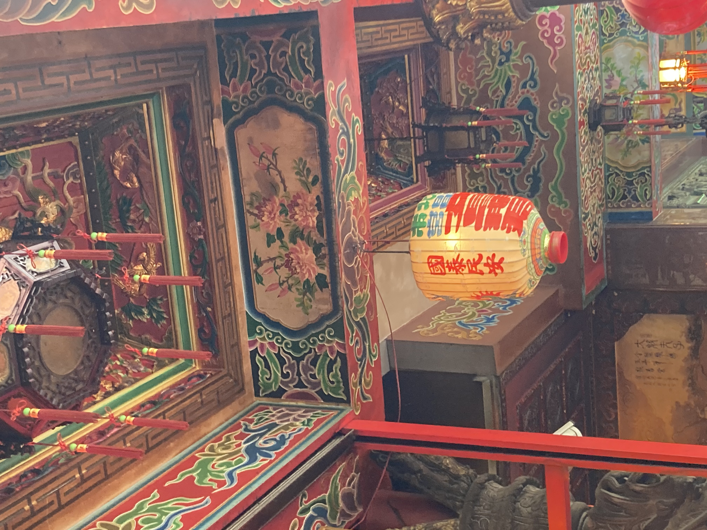
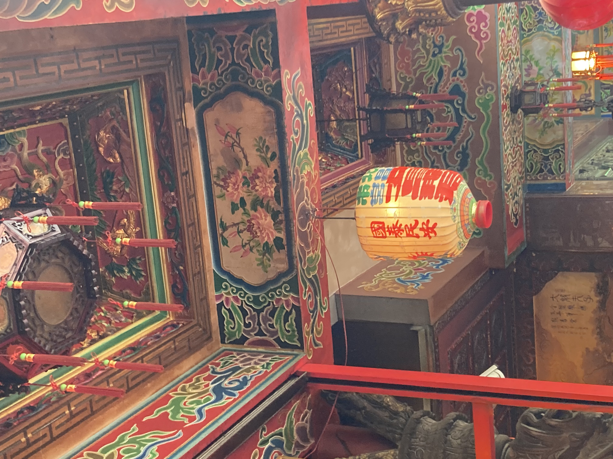

-

文昌宮
日付： 2021/11/05
スタンプ注釈：
教科書、あるいはよく使うノートにスタンプを押す。それらのスタンプの意味は文昌帝からの守りだ。
試験前に必ず行くお寺
このお寺は雙連地下鉄の近くの市場の中にある。周りには色々な果物屋や花屋などの店があって、非常に賑やかだ。お寺はあまり大きくないけど、五名の神様を祭っている。主祭神は文昌帝で、そして文魁夫子、朱衣神君、関聖帝君と太歳星君である。
こちらの文昌帝は試験合格にとても霊験あらたかな神だと言われている。重要な試験前に必ず参拝する受験生は多い。主祭神は中間であって、左側は関聖帝君や朱衣神君だが、右側は文魁夫子や太歳星君だ。参拝順序と方法は大切だ。なぜなら、方法は間違えたら、神様は試験中で助けてくれないからだと言われている。饅頭とか粽とかをお供え物としては良いのだ。これは饅頭や粽の中国語の呼び方が縁起のいいものだからである。参拝する時に、個人情報と試験情報を文昌帝に詳しく教えるものだ。そうしなければ、隣の人を助けることになってしまうかもしれない。
多くの人は受験や面接をする前に緊張して合格できるかどうかなどの問題が頭に浮かんだため、お寺に行って心の安定のため神様に助けを求める。だが、神様の助けだけで一夜漬けの勉強をするのはいけないんだ。
文昌宮の建築特徴
文昌宮は基本的な南方式建築だ。その特徴は屋根が曲がりで、建築の色が鮮やかである。屋根上に福禄寿や竜や仙人や将兵などの飾りがあって、木の梁は防湿のためペンキで蓮や竜などの絵が描かれている。縁起が良いようには石壁に様々な絵や説明の字が彫られている。石柱の表面には過去の文人の事績があって、人々を啓蒙する意味がある。左上には朱衣神君の典拠の絵があって、右上には文魁夫子の典拠の絵だ。
 
